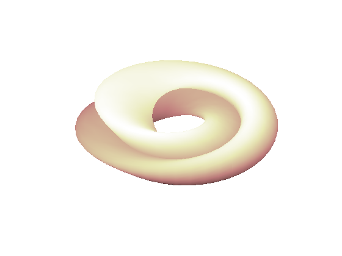

クラインの壷
XYKLEIN で定義される Figure-8 の曲線の回転によりクラインの壷を作成します
Thanks to C. Henry Edwards, Dept. of Mathematics, University of Georgia, 6/20/93.
ab = [0 2*pi]; rtr = [2 0.5 1]; pq = [40 40]; box = [-3 3 -3 3 -2 2]; vue = [55 60]; clf tube('xyklein',ab,rtr,pq,box,vue); shading interp colormap(pink);